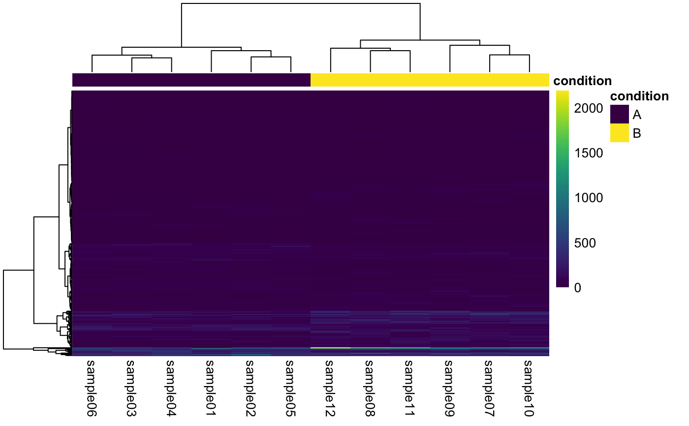
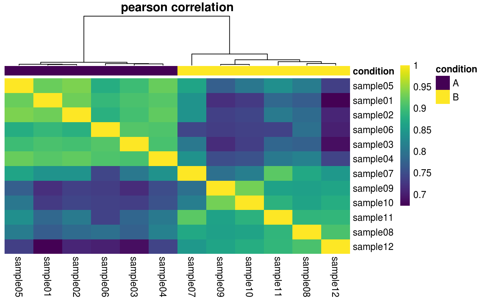
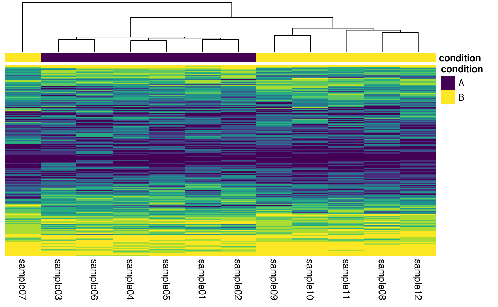
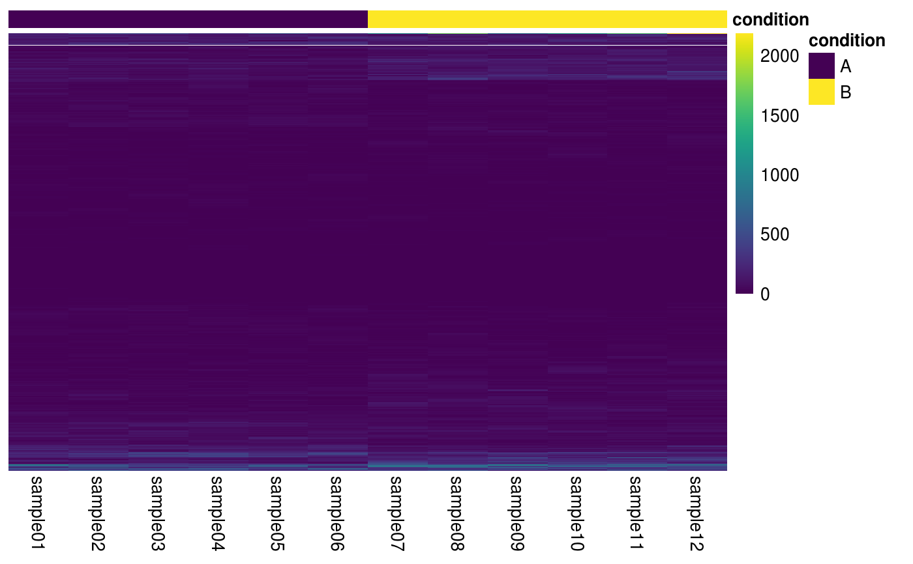
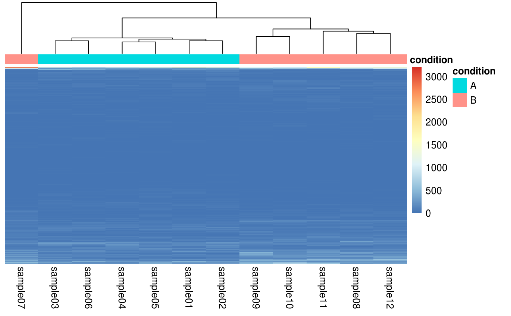
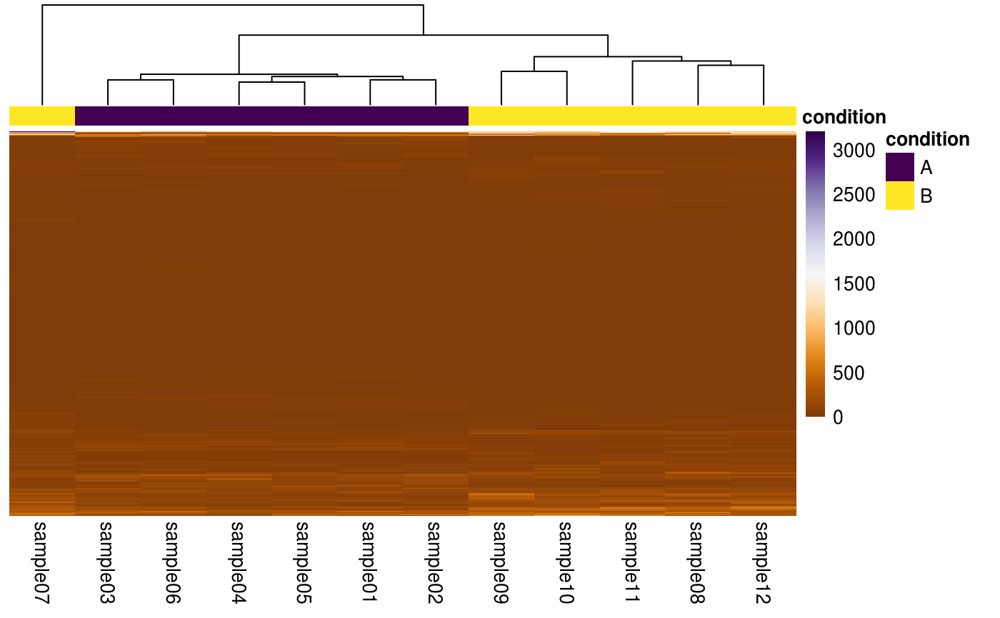
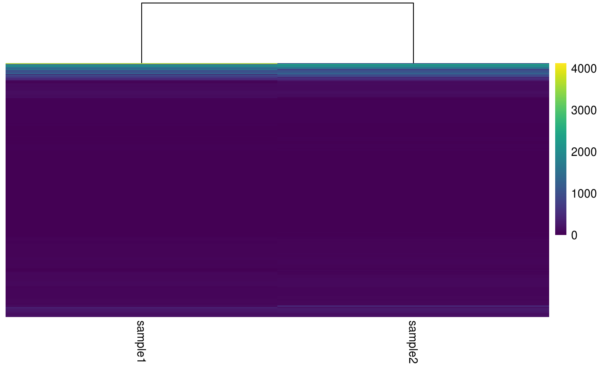
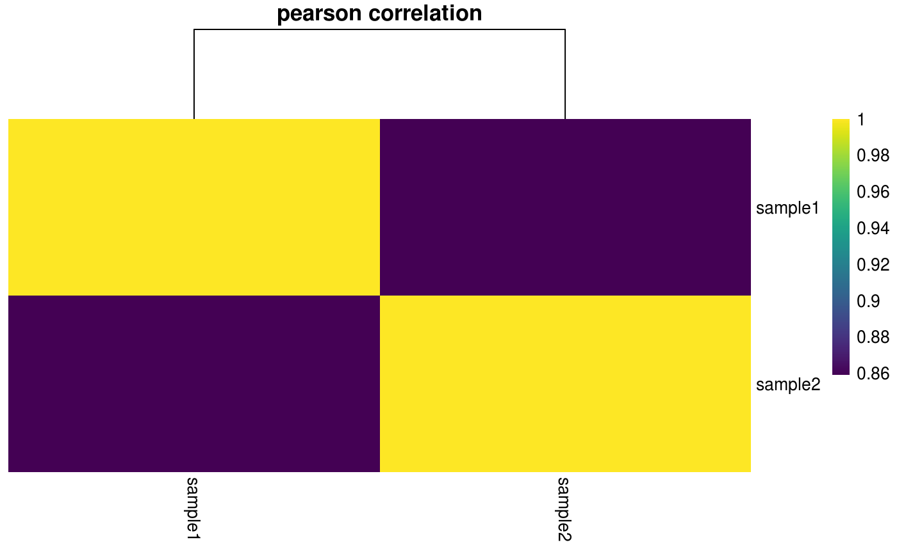
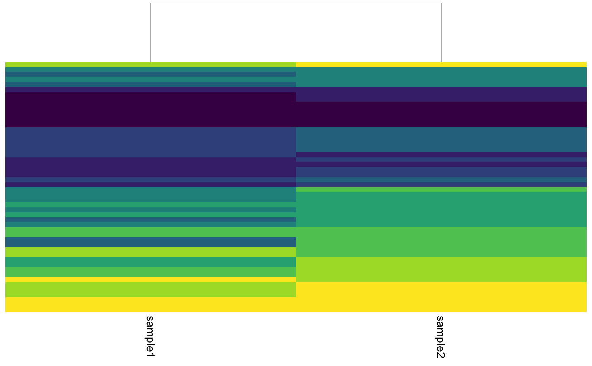

Construct a simple heatmap.
plotHeatmap(object, ...) plotCorrelationHeatmap(object, ...) plotQuantileHeatmap(object, ...) # S4 method for SummarizedExperiment plotHeatmap(object, assay = 1L, interestingGroups = NULL, scale = c("none", "row", "column"), clusterRows = TRUE, clusterCols = TRUE, showRownames = FALSE, showColnames = TRUE, treeheightRow = 0L, treeheightCol = 50L, color = viridis::viridis, legendColor = viridis::viridis, borderColor = NULL, title = NULL, ...) # S4 method for SingleCellExperiment plotHeatmap(object, assay = 1L, interestingGroups = NULL, scale = c("none", "row", "column"), clusterRows = TRUE, clusterCols = TRUE, showRownames = FALSE, showColnames = TRUE, treeheightRow = 0L, treeheightCol = 50L, color = viridis::viridis, legendColor = viridis::viridis, borderColor = NULL, title = NULL, ...) # S4 method for SummarizedExperiment plotCorrelationHeatmap(object, assay = 1L, interestingGroups = NULL, method = c("pearson", "spearman"), clusteringMethod = "ward.D2", showRownames = TRUE, showColnames = TRUE, treeheightRow = 0L, treeheightCol = 50L, color = viridis::viridis, legendColor = viridis::viridis, borderColor = NULL, title = TRUE, ...) # S4 method for SingleCellExperiment plotCorrelationHeatmap(object, assay = 1L, interestingGroups = NULL, method = c("pearson", "spearman"), clusteringMethod = "ward.D2", showRownames = TRUE, showColnames = TRUE, treeheightRow = 0L, treeheightCol = 50L, color = viridis::viridis, legendColor = viridis::viridis, borderColor = NULL, title = TRUE, ...) # S4 method for SummarizedExperiment plotQuantileHeatmap(object, assay = 1L, interestingGroups = NULL, n = 10L, clusterRows = TRUE, clusterCols = TRUE, showRownames = FALSE, showColnames = TRUE, treeheightRow = 0L, treeheightCol = 50L, color = viridis::viridis, legendColor = viridis::viridis, legend = FALSE, borderColor = NULL, title = NULL, ...) # S4 method for SingleCellExperiment plotQuantileHeatmap(object, assay = 1L, interestingGroups = NULL, n = 10L, clusterRows = TRUE, clusterCols = TRUE, showRownames = FALSE, showColnames = TRUE, treeheightRow = 0L, treeheightCol = 50L, color = viridis::viridis, legendColor = viridis::viridis, legend = FALSE, borderColor = NULL, title = NULL, ...)
| object | Object. |
|---|---|
| ... | Passthrough arguments to |
| assay |
|
| interestingGroups |
|
| scale |
|
| clusterRows, clusterCols |
|
| showRownames, showColnames |
|
| treeheightRow, treeheightCol |
|
| color |
|
| legendColor |
|
| borderColor |
|
| title |
|
| method |
|
| clusteringMethod |
|
| n |
|
| legend |
|
pheatmap.
SummarizedExperiment: Construct a correlation heatmap comparing the columns
of the matrix.
SummarizedExperiment: Scale the heatmap by applying quantile breaks.
By default, row- and column-wise hierarchical clustering is performed using
the Ward method, but this behavior can be overrided by setting clusterRows
or clusterCols to FALSE.
plotCorrelationHeatmap(rse)plotQuantileHeatmap(rse)## Disable column clustering. plotHeatmap(rse, clusterCols = FALSE)## Using pheatmap default colors. plotHeatmap(rse, color = NULL, legendColor = NULL)## Using hexadecimal color input. library(RColorBrewer) purple_orange <- colorRampPalette(brewer.pal(n = 11L, name = "PuOr"))(256L) plotHeatmap(rse, color = purple_orange)## SingleCellExperiment ==== plotHeatmap(sce)#>plotCorrelationHeatmap(sce)#>plotQuantileHeatmap(sce)#>